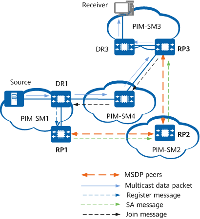

Understanding MSDP Peer-based Inter-domain Multicast
As shown in Figure 1, a PIM-SM network is divided into four PIM-SM domains. There is an active multicast source (Source) in domain PIM-SM1, and RP1 knows this source after Source registers to it. If domains PIM-SM2 and PIM-SM3 want to know the exact location of this source in order to receive multicast data from it, MSDP peer relationships must be set up between RP1 and RP2, and between RP2 and RP3.
Figure 1 Inter-domain transmission of multicast source information
Multicast source information is transmitted between domains as follows:
- When Source in PIM-SM1 sends the first multicast data packet to the multicast group G, the designated router DR1 encapsulates multicast data into a Register message and sends it to RP1, which then obtains information about this multicast source.
- As the source RP, RP1 creates SA messages and periodically sends them to its peer RP2. Each SA message contains the multicast source address S, the group address G, and the address of source RP (RP1) that creates the SA message.
- After receiving an SA message, RP2 performs an RPF check. If the message passes the check, RP2 forwards it to RP3 and checks whether group G has a member in the local domain. As PIM-SM2 contains no receiver of group G, RP2 does not take any further action.
- After receiving the SA message, RP3 performs an RPF check, which the message passes. As a member of group G exists in PIM-SM3, RP3 generates an (*, G) entry through IGMP.
- RP3 creates an (S, G) entry and sends a Join message with (S, G) information to Source. The Join message is transmitted hop by hop, so that an SPT from Source to RP3 is set up. When multicast data reaches RP3 along the SPT, RP3 forwards it to the receiver along the RPT.
- After DR3 (receiver DR) receives multicast data from Source, it determines whether to trigger an SPT switchover.